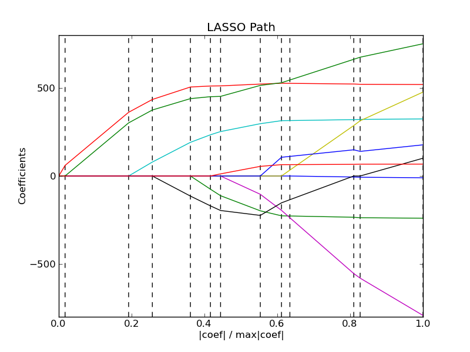

Lasso path using LARS¶
Computes Lasso Path along the regularization parameter using the LARS algorithm on the diabetest dataset.
Script output:
Computing regularization path using the LARS ...
Step Added Dropped Active set size C
0 2 1 949.435260384
1 8 2 889.315990735
2 3 3 452.900968908
3 6 4 316.074052698
4 1 5 130.130851302
5 9 6 88.7824298155
6 4 7 68.9652212024
7 7 8 19.9812546781
8 5 9 5.47747294605
9 0 10 5.0891788056
10 6 9 2.18224972883
11 6 10 1.31043524851
Python source code: plot_lasso_lars.py
print __doc__
# Author: Fabian Pedregosa <fabian.pedregosa@inria.fr>
# Alexandre Gramfort <alexandre.gramfort@inria.fr>
# License: BSD Style.
import numpy as np
import pylab as pl
from sklearn import linear_model
from sklearn import datasets
diabetes = datasets.load_diabetes()
X = diabetes.data
y = diabetes.target
print "Computing regularization path using the LARS ..."
alphas, _, coefs = linear_model.lars_path(X, y, method='lasso', verbose=True)
xx = np.sum(np.abs(coefs.T), axis=1)
xx /= xx[-1]
pl.plot(xx, coefs.T)
ymin, ymax = pl.ylim()
pl.vlines(xx, ymin, ymax, linestyle='dashed')
pl.xlabel('|coef| / max|coef|')
pl.ylabel('Coefficients')
pl.title('LASSO Path')
pl.axis('tight')
pl.show()